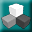

Creating an embedded composite
In a function block diagram, you can create an embedded composite by dragging the Custom Block

from the Special Items palette and clicking the Embedded Composite icon, as shown in the following figure.Before clicking Next, enter the name of the composite in the Block Name field. After clicking Next, select the type of algorithm you want to use for the composite. You can create a Function Block Diagram (FBD) composite or a Sequential Function Chart (SFC) composite. The name indicates the type of algorithm the composite contains.
The number of inputs you set on this dialog determines the number of values to which you can wire from the containing FBD into the composite. In the composite, these wired values are input parameters and used as inputs to the composite's control strategy. The number of outputs determines the number of values that can be wired from the composite back to blocks in the containing FBD. In the composite, these wired output values are output parameters. All input and output parameters are visible parameters on the composite block in the containing function block diagram.
In an SFC, you can insert an embedded composite by right-clicking in the right side of the Hierarchy View, and then selecting Add. A dialog appears, where you click the Embedded Composite icon, as shown in the following figure.

Then, you enter the block name and then click Next. After clicking Next, select the type of algorithm you want to use for the composite. You can create a Function Block Diagram (FBD) composite or a Sequential Function Chart (SFC) composite. The inputs and outputs are not wired in an SFC diagram, but you might want to create a number of input and output parameters for use in the composite. After setting these numbers, click Finish.
The composite now appears in the hierarchy view, but not on the SFC diagram. You run the algorithm in the composite using a non-boolean action in a step, and you can reference the parameters in the composite.